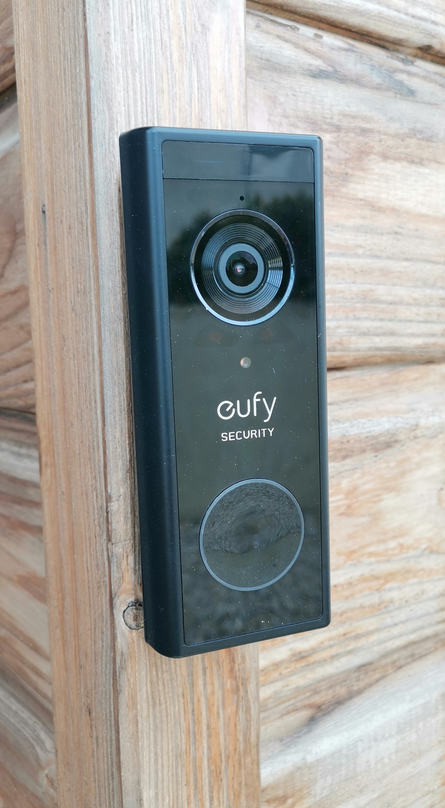
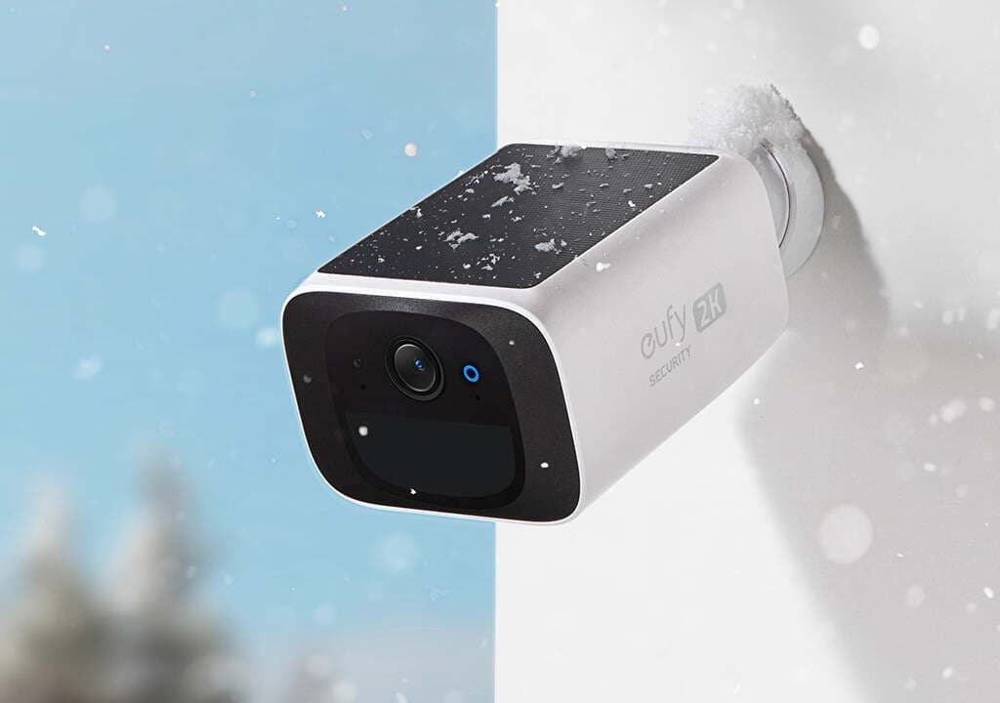
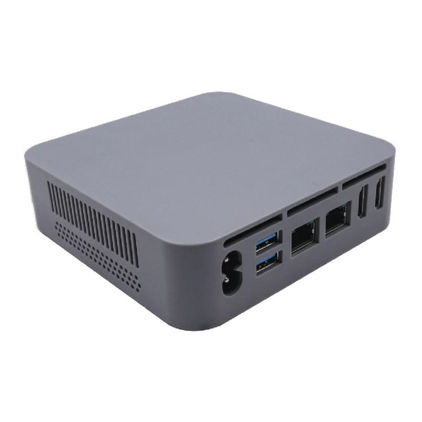
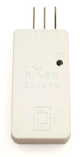

Cette automatisation déclenche, quelques secondes avant votre retour à la maison,
l’ouverture du portail, du garage et de la serrure de la porte d’entrée, tout en désactivant
automatiquement le système de sécurité du logement. Elle peut être activée directement
depuis l’écran multimédia du véhicule (CarPlay / Android Auto) ou par une simple commande
vocale sur iPhone. Outre son côté très pratique, dans certains cas elle renforce la sécurité
des passagers en évitant un arrêt prolongé sur la chaussée : le portail s’ouvre à temps pour
permettre l’entrée immédiate du véhicule dans la propriété.
Mise en route d'un système audio/vidéo
🎬 Présentation en vidéo d’une automatisation “séance cinéma”
Un simple appui sur un bouton du tableau de bord suffit pour lancer toute une série d’actions :
Mise en route du serveur de stockage : celui-ci démarre uniquement quand c’est nécessaire, ce qui permet d’économiser environ 300 kWh par an, soit près de 50 €.
Préparation de la projection : le vidéoprojecteur descend, suivi de l’écran électrique.
Activation des équipements audio/vidéo : l’automatisation place les appareils sous tension. Le fait de les couper totalement du mode veille représente environ 40 kWh d’économies par an pour une installation standard.
Mise en fonctionnement automatique : projecteur, lecteur multimédia et amplificateur s’allument. L’ampli sélectionne la bonne source et règle le volume au niveau défini dans l’automatisation.
Au préalable les volets roulants se seront fermés et un éclairage tamisé diffuse une lumière douce dans la pièce.
Il ne reste plus qu’à choisir le programme à visionner !
✨ L’automatisation peut aller encore plus loin :
Au lancement du film, la lumière peut s’éteindre ou rester allumée selon vos préférences.
Une simple pause rallume l’éclairage, qui s’éteint à la reprise de la lecture.
Le tableau de bord peut intégrer une télécommande universelle
programmée pour piloter facilement tout le système.
Intégration d'une sonnette connectée et d'une caméra solaire au système de sécurité
L’installation d’une sonnette connectée à votre porte d’entrée vous permet de communiquer avec vos visiteurs, où que vous soyez. Elle apporte également un niveau supplémentaire de protection.
Intégrée au système domotique, son détecteur de mouvement devient un véritable élément de sécurité : il permet d’activer une vidéosurveillance ciblée de la porte, avec enregistrement possible, la nuit ou lorsque l’alarme est activée, selon les besoins définis par l’utilisateur.
Le même principe s’applique à une caméra classique, qu’elle soit filaire ou solaire sur batterie. Dans ce dernier cas, l’installation est grandement simplifiée, rendant la solution adaptée et accessible à tout type de logement.


La passerelle domotique idéale
Connect Maison Locale s’appuie sur un mini-PC pour piloter votre maison connectée, plutôt qu’une box propriétaire classique limitée
en puissance et à la pérennité incertaine.
Ce choix représente un investissement intelligent : pour un prix équivalent à celui d’une box du marché, un mini-PC offre des performances
et une évolutivité incomparables.
Puissance et rapidité : processeur plus performant, mémoire vive extensible, stockage SSD idéal pour l'accès instantané au tableau de bord.
Ouverture et compatibilité : prise en charge de tous les protocoles de communication actuels et futurs, contrairement aux box fermées
qui peuvent devenir obsolètes.
Sécurité maximale et accès distant simplifié : accès direct à votre serveur, sans dépendance à des serveurs tiers susceptibles de tomber en panne ou d’être arrêtés
par leur éditeur. La connexion chiffrée est configurée sans ouverture de port sur la box internet.
Grâce à l’installation et à la configuration assurées par Connect Maison Locale, vous bénéficiez d’un serveur domotique haute performance, sécurisé et accessible partout, offrant l’excellence de la maison connectée d’aujourd’hui.
À titre d’exemple : un tableau de bord très complexe se charge sur smartphone en 7 secondes avec une connexion 4G et 4 secondes en Wi-Fi.

Galerie équipements domotique
Détecteur de mouvement Z-WavePanneau d'affichage dissuasifCaméra intérieureDongle ZigbeeModule double contact sec Z-WaveDétecteur de mouvement Z-WaveModule volet roulant Fibaro Z-Wave

Module Zigbee TIC LinkyPrise ZigbeePrise ZigbeeModule contact sec Z-WaveThermomètre ZigbeeThermomètre ZigbeeÉmetteur IR ZigbeeDongle Z-WaveSerrure connectée ThreadSonnette connectée


{kind=link}